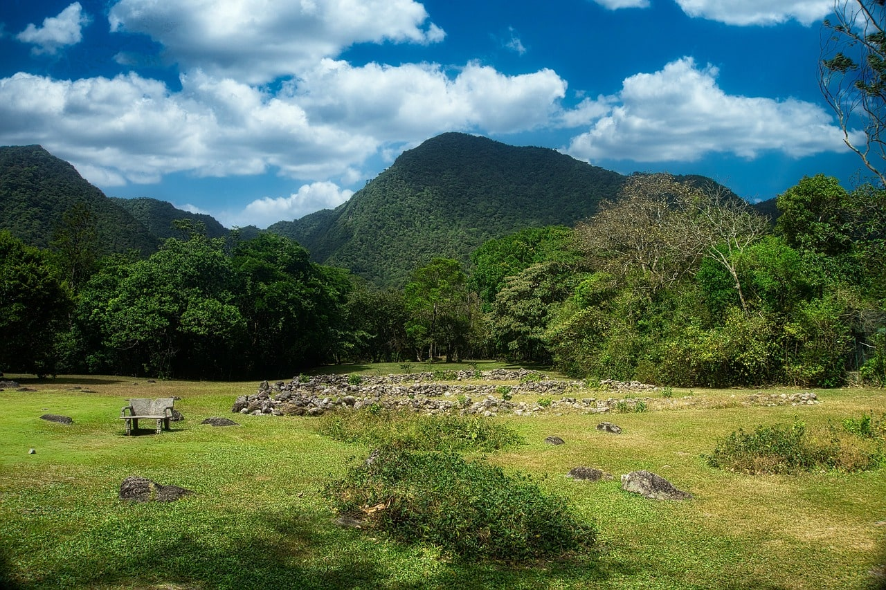

El Valle de Antón
Naturaleza, cultura y aventura en la provincia de Coclé

Vista panorámica de El Valle de Antón, provincia de Coclé.
Un destino natural de Panamá
El Valle de Antón es una comunidad ubicada en la provincia de Coclé, rodeada de montañas y abundante vegetación[cite: 6]. Su paisaje, su clima agradable y sus espacios naturales lo convierten en un lugar apropiado para realizar caminatas, conocer la cultura local y disfrutar de actividades al aire libre[cite: 6].
Este destino se encuentra dentro de una antigua caldera volcánica y posee una gran diversidad de plantas y animales[cite: 6]. Entre sus símbolos naturales se destaca la rana dorada panameña[cite: 6, 7].
Principales atractivos
- La India Dormida[cite: 6].
- El Chorro El Macho[cite: 6].
- El mercado de artesanías y productos locales[cite: 6].
- Los senderos y jardines naturales[cite: 6].
- Los pozos termales[cite: 6].
Recorrido recomendado
- Llegar temprano y desayunar en el centro del pueblo[cite: 6].
- Visitar un sendero natural o el Chorro El Macho[cite: 6].
- Recorrer el mercado de artesanías[cite: 6].
- Almorzar en un restaurante de la localidad[cite: 6].
- Finalizar la visita contemplando el paisaje del valle[cite: 6].
Recomendaciones para la visita
- Utilizar ropa cómoda y calzado apropiado para caminar[cite: 6].
- Llevar agua, protector solar y repelente[cite: 6].
- Depositar los residuos en los lugares indicados[cite: 6].
- Respetar la flora, la fauna y las normas de cada sitio[cite: 6].
Enlaces de interés
Para ampliar la información, visite el sitio oficial de Turismo de Panamá[cite: 7].
También puede ver un video sobre El Valle de Antón en YouTube[cite: 7].